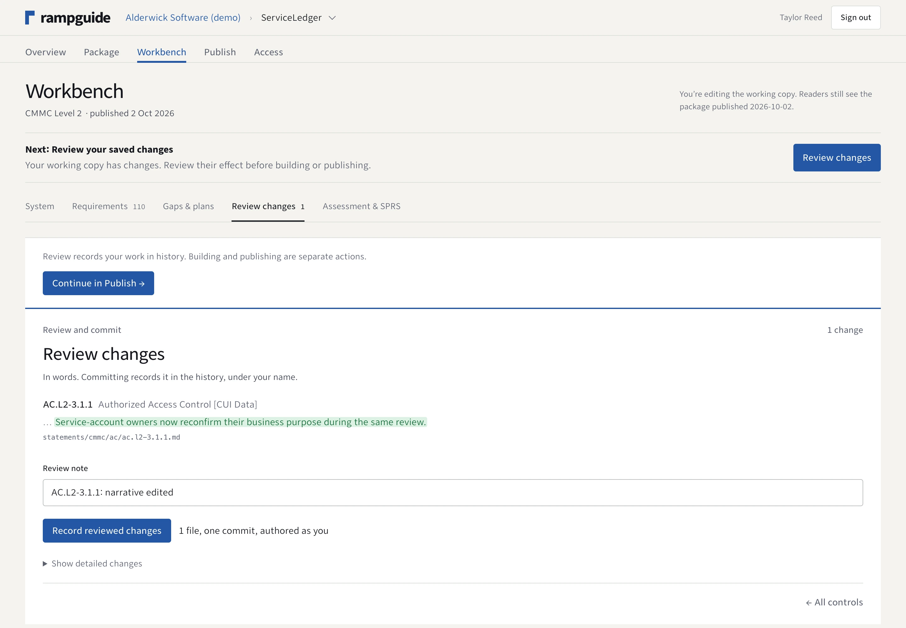

How it works
Four deliberate steps.
One clear publication boundary.
Your team can keep improving a package while readers continue to see the last published edition.
-
01
Answer and save.
Describe the implementation in the workbench. Saved answers update the private working copy and its document preview.
-
02
Review the change.
Read what changed and record the reviewed work in history. Recording a review does not publish the package.
-
03
Build the package.
Generate documents and machine-readable files from the reviewed source. Resolve the checks the build reports.
-
04
Publish an edition.
An owner explicitly publishes the built package. Approved readers receive the files their access tier permits.

Screens captured from the working application on October 2, 2026. Alderwick Software / ServiceLedger is an entirely fictional demo scenario; people, architecture, safeguards and results are fictional. No customer relationship, assessment or certification is implied.
None of these actions performs an independent assessment, grants a certification or authorization, or submits an assessment to SPRS.
From answers to a published package